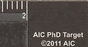
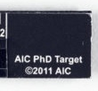
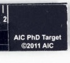

Same mark,
three frames
An AIC PhD Target appears below a kylix fragment, then beside both sides of P.Mich. inv. 6215i. The printed credit repeats. Whether each frame contains the same physical target is not recorded here.
Three complete photographs, independently fitted to the same window. Clay rectangles locate the printed target credit; no shared object scale is implied.


The small inscription



The little credit holds steady while the photographed things change: terracotta, papyrus, then the other side of that papyrus. It gives the frames a common mark, not a documented route between collections.
The papyrus article describes the verso as turned 90 degrees and reused. I can see the target in both photographs. I cannot tell whether these images show one physical calibration tool or several copies of the same design.
Kylix photograph: Metropolitan Museum, Terracotta fragment of a kylix, record 671161; the AIC PhD Target carries its own ©2011 AIC mark. Collection record ↗
P.Mich. inv. 6215i, recto and verso: figures 1–2 in Maria Nowak and W. Graham Claytor, “A Local Will with a ‘Codicillary’ Clause,” Pylon 4 (2023). Images courtesy of the University of Michigan Library Digital Collections; article licensed CC BY-NC-SA 4.0. Article ↗
Detail images are crops from those photographs. The verso crop is rotated for reading; no image has been color-corrected.